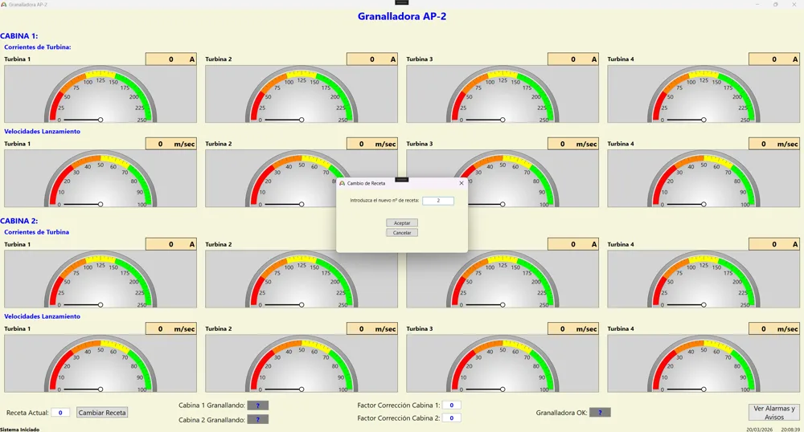
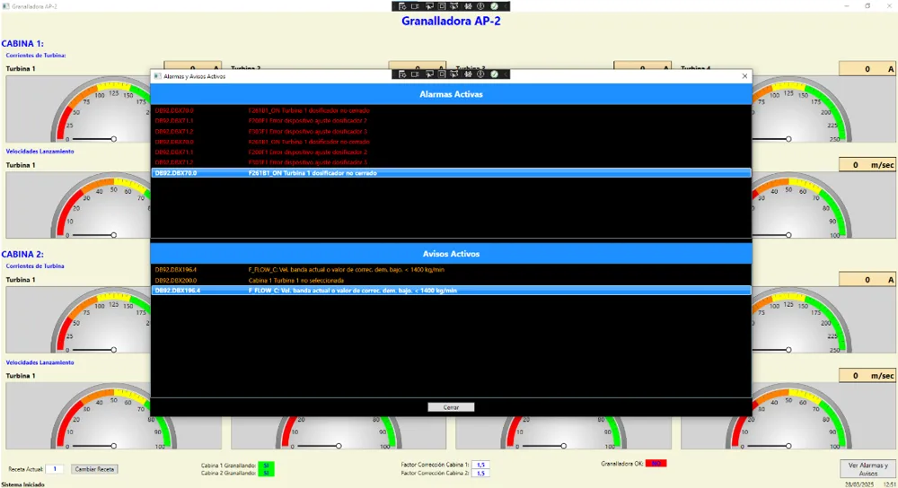

Granalladora APH
Suite de aplicaciones de escritorio para la monitorización en tiempo real de máquinas de granallado
industrial, desarrollada durante las prácticas en empresa. La solución cubre dos modelos de máquina -
AP2 y P4 - arrancando una u otra (o ambas simultáneamente) según
el valor configurado en un archivo config.ini externo, sin necesidad de recompilar.
Comunica con la máquina vía OPC UA y obtiene alarmas y avisos activos desde un WebService WCF propio, actualizando la interfaz cada segundo (datos OPC) y cada 3 segundos (alarmas/avisos).
Módulo P4 - Granalladora de 3 cabinas
Monitoriza una granalladora con 3 cabinas independientes, cada una con 4 turbinas. Para cada turbina se muestra en tiempo real la corriente (A) y la velocidad de lanzamiento (m/s) mediante gauges animados.
- Panel central por cabina: Factor de corrección, estado granallando (SI/NO en verde/rojo) y receta activa en curso.
- Panel lateral derecho: Bobina en inspección, metraje de salida, metraje de granalladora y velocidad de línea - métricas globales del proceso.
- Alarmas y Avisos: Dos ventanas separadas, cada una con un DataGrid que se recarga automáticamente cada 3 segundos desde el WebService mostrando solo los registros activos.
- Node IDs configurables: Cada variable OPC UA (corriente, velocidad, estados, métricas) se
mapea en el
config.ini, permitiendo adaptar la app a cualquier servidor sin tocar el código.
Módulo AP2 - Granalladora de 2 cabinas
Monitoriza una granalladora con 2 cabinas, cada una con 4 turbinas, mostrando corriente y velocidad de lanzamiento en tiempo real con el mismo sistema de gauges.
- Barra inferior de estado: Factor de corrección por cabina, estado granallando de cada cabina y estado global GranalladoraOK en verde/rojo.
- Reloj en tiempo real: Fecha y hora actualizados cada segundo en la propia interfaz.
- Indicador de conexión OPC UA: Barra de estado que muestra "Sistema Iniciado" en verde o "Error de conexión" en rojo según el resultado del arranque.
- Cambio de receta: Ventana modal que permite al operario introducir un nuevo número de receta con validación - solo acepta enteros positivos.
- Alarmas y Avisos unificados: Una sola ventana con fondo negro que muestra alarmas en rojo y avisos en naranja en listas separadas, recargadas cada 3 segundos desde el WebService.
Tecnologías usadas
Lenguaje: C#
Framework: .NET 8, WPF
Comunicación industrial: OPC UA (Opc.Ua SDK), WebService WCF propio
UI: Telerik WPF Gauges (Needle + RadialGauge)
Otros: DispatcherTimer, archivos INI con P/Invoke, config.ini externo, async/await.
Galería de pantallas


Decisiones técnicas
Arranque configurable desde INI: El App.xaml.cs lee la clave
Granalladora del config.ini al iniciar y abre la ventana AP2, P4 o ambas
simultáneamente. La misma aplicación se despliega en cualquier entorno industrial sin recompilar.
Timer con Stop/Start para OPC UA: El DispatcherTimer hace Stop() antes de iniciar
cada ciclo de lectura y Start() al terminar, evitando que se solapen lecturas si una variable tarda
más de 1 segundo en responder.
Separación de métodos de lectura: Se implementaron tres helpers independientes -
LeerYActualizarGaugeAsync, LeerYActualizarTextoAsync y
LeerYActualizarEstadoAsync - evitando duplicación de lógica en los más de 30 nodos que se leen por
ciclo en P4.
WebService WCF propio para alarmas: Las alarmas y avisos no vienen de OPC UA sino de un
servicio WCF desarrollado específicamente (ServicioAlarmasAvisosAP4), lo que desacopla el canal de
monitorización del canal de alertas y permite filtrar por tipo (1=alarma, 2=aviso) con el mismo método.
Node IDs totalmente externalizados: Ningún identificador OPC UA está hardcodeado en el código.
Todos se leen del config.ini por sección y clave, lo que permite reasignar cualquier variable a un
nodo diferente del servidor sin modificar la aplicación.